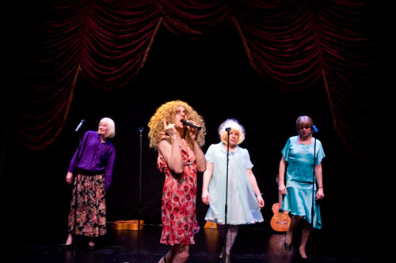
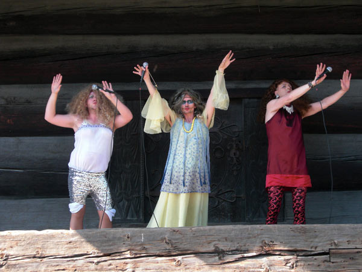
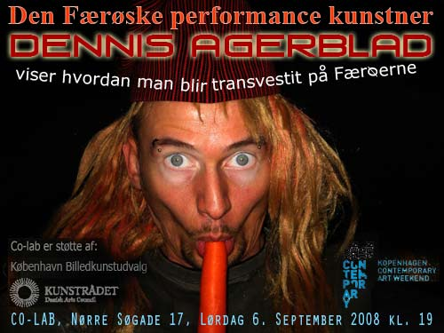
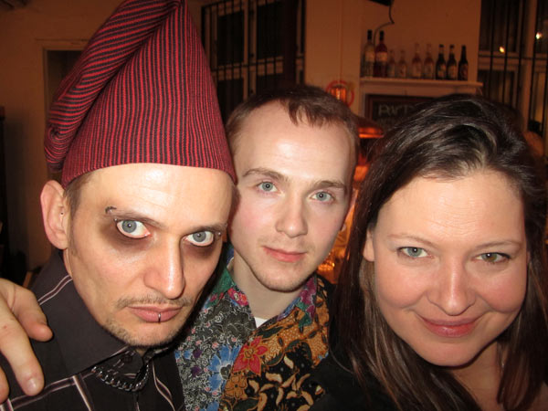
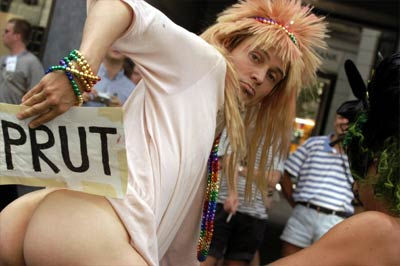
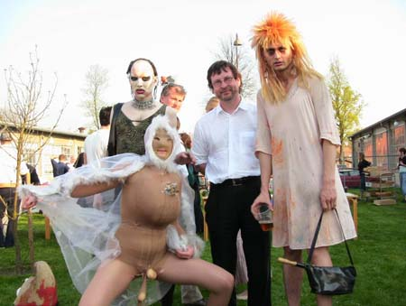
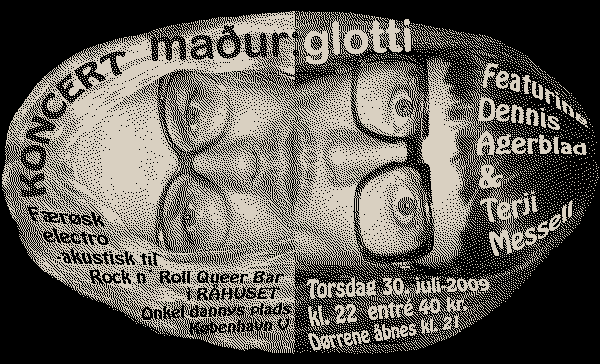

Udvalgte koncerter / performances
Dennis Agerblad Band
Dennis Agerblad Band Live
Camp-X, Rialto Teateret, Frederiksberg

Dennis Agerblad Band Live
Happy Nordic Music Days, OSLO

Dennis Agerblad
Dennis Agerblad viser hvordan man bli'r transvestit på Færøerne

Dennis Agerblad læser digte op af Tóroddur Poulsen

dunst
Dunst i homoparaden

Dunst-Show i Berlin
Dunst-Party "Shave Your Pet", Queerfestival
Dunst-Show til Lars Von Trier og Peter Ålbek's Fødselsdags fest

maður:glotti
maður:glotti til G-mini Festival, Gøta, Færøerne
maður:glotti til Rock n' Roll Queer Bar, Råhuset, København

.